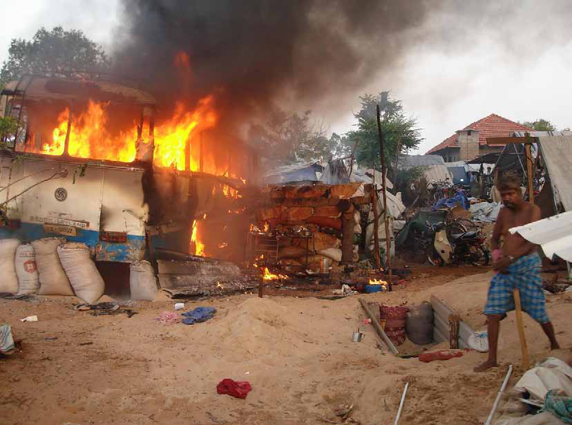

Humanitarian
Humanitarian
Jaffna Monitor
hellojaffnamonitor@gmail.com
52
N
iththilan (name changed), a former
courageous United Nations worker,
witnessed the harrowing scenes of Sri Lanka's
final war in 2009. Among the few living
who can testify to the devastating atrocities
committed by both the Sri Lankan government
and the LTTE, he played a crucial role in the
conflict's final stages. In September 2008,
after the directive for the evacuation of UN
and international humanitarian organizations
from LTTE-controlled territories, Niththilan
was appointed as the officer in charge of
all UN operations in the region. He led the
UN mission within LTTE-controlled areas,
directing local staff in the absence of his
international colleagues. Currently residing in
Europe, Niththilan has decided to break his
silence and share his experiences with 'Jaffna
Monitor' under the condition of anonymity.
How many shells landed inside the UN
hub in the no-fire zone?
Based on my estimations, approximately 25
shells landed inside the UN hub on the first
day. The following day, we left the no-fire
zone, although food distribution continued
at the UN hub. While people were lined up to
receive food items, the government shelled the
area, resulting in numerous casualties. Those
standing in line were brutally killed.
Later, I met with a general whose name has
been frequently associated with allegations
of war crimes and confronted him by asking,
Diaries
A UN Worker's Exclusive Testimony to
'Jaffna Monitor' on the 15th Anniversary
of Sri Lanka's Brutal War Conclusion
Part-3
Humanitarian
Interview
BY:
Kaniyan Pungundran
fzpad; G+q;Fd;wd;
Jaffna Monitor hellojaffnamonitor@gmail.com 53 "Why did you shell the no-fire zone?" Initially, he denied it, but after much hesitation, he admitted it was true. He explained that they had no choice but to compel the people from the LTTE-controlled area to move into their territory. While making this admission, he showed no emotions; he was not happy but resolute in his justification. Where and how did you end up meeting him? That's a long story..." Niththilan paused for a long moment, gathering his thoughts before continuing. "Before that, you should ask me how we, the UN workers, escaped the war zone." Ok... How did UN workers finally escape from the war zone? We were desperate to escape the war zone. In our plight, I wrote a heartfelt letter to Balasingham Nadesan, the head of the LTTE's political wing, pleading for our family members to be allowed to leave. At that time, all the UN staff in the LTTE-held area were men, and the thought of our families' safety weighed heavily on our minds. In my letter, I assured the LTTE that if they permitted our families to leave, we male UN staff members would remain with the LTTE until the end. Every male worker at the UN signed that letter, demonstrating our collective desperation and commitment. However, the response we received was disheartening. "We cannot let your family members leave the war zone. It will set a bad precedent," Nadesan replied. His words shattered our hopes, leaving us to grapple with the harsh reality of our situation. Managing my staff became immensely difficult due to the lack of proper
Jaffna Monitor hellojaffnamonitor@gmail.com 54 bunkers, shelters, and adequate food. In the midst of this chaos, I managed to secretly send 15 of my staff members and their families on a ship under the guise of being wounded. However, I still had 115 UN staff members with me, and the responsibility for their safety weighed heavily on my shoulders. We devised a plan for a 15-member team of men, women, and children to escape the war zone through the Nandikadal Lagoon. This was essentially a pilot program, and the head of this mission was a brave UN worker from Kilinochchi. He took the lead despite the uncertainty of reaching the army-controlled area amidst intense fighting. There was a lady in the group whose infant child was gravely ill—they needed to leave the war zone urgently, or else the child would die. I had initially arranged for her to leave on one of the ICRC ships and obtained the necessary pass from the LTTE office due to the child's critical condition. However, near the ship, Varathan, an LTTE leader in charge of transport, stopped her and her child, accusing them of being traitors to Tamil Eelam. He shouted at her, citing the reason: her husband, a UN worker, had previously helped his brother escape from the LTTE-controlled area. Varathan forcefully removed the mother and her gravely ill infant from the ship, proclaiming, "We show no mercy to traitors of Tamil Eelam." In the melee, he even labeled the infant as a traitor. The scene was heart- wrenching, as the mother's desperate pleas for her child's life fell on deaf ears. I confronted Varathan, arguing that it was An injured Tamil civilian lies in a makeshift hospital, a victim of brutal shelling by the Sri Lankan government, highlighting the devastating impact on innocent lives.
Jaffna Monitor hellojaffnamonitor@gmail.com 55 unjust to punish this innocent child for the actions of his father. I implored him, saying, "If you don't allow this infant to leave on this ship, she will die." Varathan, with a chilling calmness, responded, "We have enough land to bury this child if it dies." His words pierce through me even today. What was her husband's transgression? He was a UN worker who, using a UN vehicle, covertly helped his brother escape from the LTTE-controlled area to the army-controlled area to avoid forced enlistment by the LTTE. He concealed his brother in the vehicle during this operation. Did he come back again? No, he did not return. Had he come back, the LTTE would have arrested him and forced him into enlistment. What happened to Varathan? I heard that he took his own life in the last days of the war in Mullivaikkal. Returning to the main story, this woman and her child were part of a team of 15 members who were included in our pilot escape program from the LTTE-held area. We notified the army through our Vavuniya office about the group's escape attempt. Around 1:30 AM one night, they began their journey in complete secrecy. Suddenly, intense fighting erupted, and they found themselves caught in the crossfire with bombs falling heavily around them. I was terrified, fearing they had all perished. The next morning, around 10 AM, I received a call from my colleague who was in charge of the UN Department for Safety and Security (UNDSS) based in Vavunia, confirming the safe arrival of our group of UN workers. The team leader urged me to send another group and implored me to join them. I responded unequivocally, "I am the captain of this ship; I will only leave when every staff member has safely exited the war zone. Later, I received a call from the woman's sister, who had been forced off the ship by Varathan. She, who was calling me from the UK, informed me that her sister was in the hospital. I later learned that during their escape, she had stepped on a landmine and lost her entire leg. Remarkably, their group leader carried her on his shoulders for three kilometers. When I asked my UNDSS Colleague why he had not informed me about the incident, he replied, "Had I told you, you would not have sent another batch of UN workers. That is why I did not tell you. By the end of March 2009, I had successfully coordinated the evacuation of multiple groups of UN staff and their families in a manner similar to the initial deployment. Only my family, myself, and a few remaining personnel were left in the conflict area by this time. How did you and the remaining UN workers finally escape from the LTTE- controlled area? The Tigers had established forward defense positions along the shores of Nandikadal Lagoon specifically to prevent Tamil civilians from fleeing LTTE-held territories. The LTTE fighters manning these positions were ordered to shoot any civilians attempting to escape. Approaching the sea without being detected at these checkpoints was nearly impossible.
Jaffna Monitor hellojaffnamonitor@gmail.com 56 We devised a strategy accordingly. Two of our local United Nations staff members approached one of these positions and gradually befriended the LTTE members guarding it. After several days of building rapport, we managed to bribe the LTTE fighters at that position with 25,000 rupees, securing their agreement to let us pass during the night. The Tigers, who prided themselves on never having accepted a bribe before, took the 25,000 rupees and allowed us to escape through Nandikadal Lagoon to the army- controlled area. They informed us that a particular night would present the optimal opportunity for escape. I personally funded the necessary bribe. At that time, even a single sovereign of jewelry in the Vanni region was valued at less than 3,000 rupees. The fighters likely needed the funds, perhaps even to plan their own eventual escape from the conflict zone. I do not blame the fighters who accepted the bribe under these circumstances. Instead, I attribute responsibility to the leadership that placed them in such a precarious position. It is probable that these fighters were conscripted against their will. Who can say for certain? To be continued... Fire engulfs a civilian area after it was hit by shells in early 2009,
